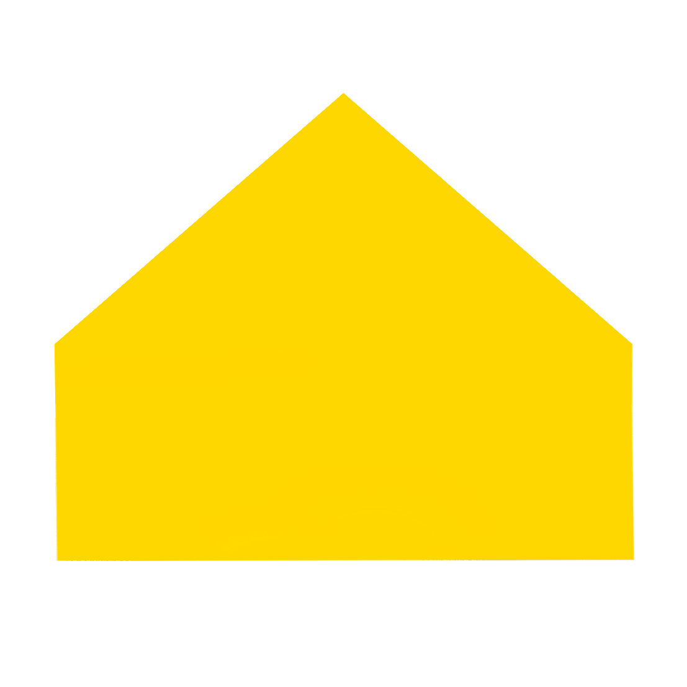

Obtenir un diplôme d'ingénieur est un atout majeur sur le marché du travail, offrant de nombreuses opportunités professionnelles et
Progression des écoles d'ingénieur en France:

Les écoles d'ingénieurs en France offrent une formation de haut niveau, combinant théorie et pratique. Elles préparent les étudiants
apprenants à relever des défis techniques et à innover dans divers domaines tels que l'informatique, l'énergie, l'environnement, et
bien d'autres. En particulier ils apprennents à calculer x2.
—Etudiant anonyme, Ma vie, mon histoire
Je trouve que les écoles d'ingénieurssont top!
Informatique
Énergie
Environnement
Développement logiciel, cybersécurité,
intelligence artificielle.Ingénierie électrique, énergies
renouvelables, efficacité énergétique.Gestion des ressources, traitement des
déchets, développement durable.
Obtenir un diplôme d'ingénieur est un atout majeur sur le marché du travail, offrant de nombreuses opportunités professionnelles et
Progression des écoles d'ingénieur en France: